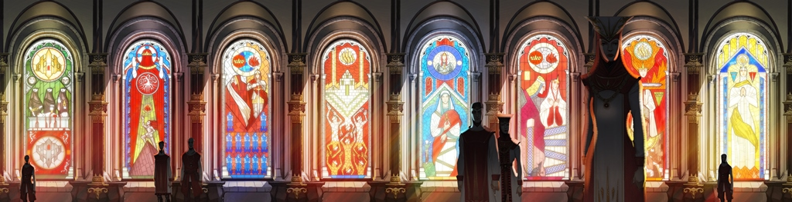

Elfish Poems
Mir Da'len Somniar
A traditional Dalish Lullaby found in the children's book "The Seer's Yarn", collected by Seer Agata.
Elgara vallas, da'len
Melava somniar
Mala taren aravas
Ara ma'desen melar
Iras ma ghilas, da'len
Ara ma'nedan ashir
Dirthara lothlenan'as
Bal emma mala dir
Tel'enfenim, da'len
Irassal ma ghilas
Ma garas mir renan
Ara ma'athlan vhenas
Ara ma'athlan vhenas
Sun sets, little one,
Time to dream
Your mind journeys,
But I will hold you here.
Where will you go, little one
Lost to me in sleep?
Seek truth in a forgotten land
Deep with in your heart.
Never fear, little one,
Wherever you shall go.
Follow my voice--
I will call you home.
I will call you home.

Suledin (Endure)
Suledin is "an elven song about enduring and emerging from sorrow, tied to the loss of their ancient lands, but commonly adapted to express personal struggles as well."
Melava inan enansal
ir su aravel tu elvaral
u na emma abelas
in elgar sa vir mana
in tu setheneran din emma na
lath sulevin
lath araval ena
arla ven tu vir mahvir
melana ‘nehn
enasal ir sa lethalin
Time was once a blessing
but long journeys are made longer
when alone within.
Take spirit from the long ago
but do not dwell in lands no longer yours.
Be certain in need,
and the path will emerge
to a home tomorrow
and time will again
be the joy it once was
Where Willows Wail
An elven version of a lullaby local to Denerim and nearby villages to the south.
Tel’enara bellana bana’vhenadahl,
Sethen’a ir san’shiral, mala tel’halani
Ir sa’vir te’suledin var bana’vallaslin,
Vora’nadas san banal’him emma abel revas.
Ir tela’ena glandival, vir amin tel’hanin.
Ir tela las ir Fen halam, vir
am’tela’elvahen.
We/it lost eternity or the ruined tree of the People
Time won’t help when the land of dreams is no longer our journey
We try to lead despite the eventual failing of our markings.
To the inevitable and troubling freedom we are committed.
When we could no longer believe, we lost glory to war.
When the Wolf failed/won, we lost the People to war.
Note: The above translation is described as not being a literal translation, as "some form of lyrical shorthand is employed throughout" and it is completely different from modern formal Dalish. Thus it is impossible to use it to try to deconstruct the language.
Human Kingdoms
Ballad of Ayesleigh
From the Ballad of Ayesleigh, said to have been written after the Battle of Ayesleigh, which ended the Fourth Blight, 5:20 Exalted.
the wind that stirs
their shallow graves
carries their song
across the sands
heed our words
hear our cry
the grey are sworn
in peace we lie
heed our words
hear our cry
our names recalled
we cannot die
when darkness comes
and swallows light
heed our words
and we shall rise
Chant of Light
A number of Chant of Light verses can be encountered whilst exploring Thedas. However, the full chant can take weeks to recite, so what can be gathered is incomplete. This article is intended to collect all the known verses.
Canticle of Andraste
Andraste 1
Address and greeting
Hear now, Andraste, daughter of Brona,
Spear-made of Alamarr, to valiant hearts sing
Of victory waiting, yet to be claimed from
The steel-bond forgers of barren Tevene.
Andraste seeks an end to the suffering of the Alamarri
Great heroes beyond counting raised
Oak and iron 'gainst chains of north-men
And walked the lonely worm-roads evermore.
Mighty of arm and warmest of heart,
Rendered to dust. Bitter is sorrow,
Ate raw and often, poison that weakens and does not kill.
Why must the Shield of Alamarr shatter
'Neath bond and blade? To the wisest I sang,
To the wing'd cup-bearers of the tall sky-vaulting,
To the wintry halls of strong mountain-kings,
Where in days forgotten, voices there raised
Might be gift'd answer and those seeking find.
The Alamarri gods do not answer
From sky-tearing peaks of the sacred mountain
To secret-steep'd roots of the ancient oak trees
A lonesome choir, I, song failing unanswered,
Voice on wind returning, answered no more.
Andraste despairs for her people
In heart's drumming I heard footsteps thund'ring
Shield-brothers and spear-sisters distant raised
Blade to shackle-bearer, valiant of spirit
Blazing like star-shine, to battle they charged.
None to return to the lands of their mothers
By cruel magic taken, ice, lightning, and flame.
Should for all seasons laments ring the sky-vaults,
Should dirges all sages and histories replace?
By gods forsaken, fate emptied of hope,
Wounded I fell then, by grief arrow-studded,
Never to heal, death for me come.
The Maker appears to Andraste
Eyes sorrow-blinded, in darkness unbroken
There 'pon the mountain, a voice answered my call.
"Heart that is broken, beats still unceasing,
An ocean of sorrow does nobody drown.
You have forgotten, spear-maid of Alamarr.
Within My creation, none are alone."
Lo! My eyes open'd, shining before me
Greater than mountains, towering mighty,
Hand all outstretch'd, stars glist'ning as jewels
From rings 'pon His fingers and crown 'pon His brow.
Sword-shattering fear filled me overflowing.
Grandeur of godhood no gaze should defile.
Trembling, I called out: "Forgive me, Most High,
I should sing Your Name to the heights of heaven,
But I know it not, and must be silent."
The Wellspring of All said, "None now remember.
Long have they turned to idols and tales
Away from My Light, in darkness unbroken
The last of My children, shrouded in night."
World fell away then, misty in mem'ry,
'Cross Veil and into the valley of dreams
A vision of all worlds, waking and slumb'ring,
Spirit and mortal to me appeared.
"Look to My work," said the Voice of Creation.
"See what My children in arrogance wrought."
There I saw the Black City, towers all stain'd,
Gates once bright golden forever shut.
Heav'n filled with silence, then did I know all
And cross'd my heart with unbearable shame.
Andraste begs the Maker to give mortals another chance
Then did I see the world spread before me,
Sky-reaching mountains arrayed as a crown,
Kingdoms like jewels, glistering gemstones
Strung 'cross the earth as a necklace of pearl.
"All this is yours," spake the World-Maker.
"Join Me in heaven and sorrow no more."
"World-making Glory," I cried out in sorrow,
"How shall your children apology make?
We have forgotten, in ignorance stumbling,
Only a Light in this darken'd time breaks.
Call to Your children, teach us Your greatness.
What has been forgotten has not yet been lost."
Long was his silence, 'fore it was broken.
"For you, song-weaver, once more I will try.
To My children venture, carrying wisdom,
If they but listen, I shall return."
—Andraste 1:1-1:14
Andraste 7
Let the blade pass through the flesh,
Let my blood touch the ground,
Let my cries touch their hearts. Let mine be the last sacrifice.
—Andraste 7:12
Those who oppose thee
Shall know the wrath of heaven.
Field and forest shall burn,
The seas shall rise and devour them,
The wind shall tear their nations
From the face of the earth,
Lightning shall rain down from the sky,
They shall cry out to their false gods,,
And find silence.
—Andraste 7:19
Andraste 14
Here lies the abyss, the well of all souls.
From these emerald waters doth life begin anew.
Come to me, child, and I shall embrace you.
In my arms lies Eternity.
—Andraste 14:11
Canticle of Apotheosis
Apotheosis 1
The aftermath of Valerian Fields
Victory! Sweet song rising from the lips of the vanquishers,
The host of Shartan, the clans of Alamarri, a thousand freemen
Held aloft blade and spear and to the Maker gave thanks.
But for every one who stood and sang the hymn of praise,
Two lay at their feet, soul seeking the Light eternal.
Maferath's heart grew cold
As he looked upon the field of the dead and heard
The chant of "Glory! Glory! Glory! Hail to the Maker
Most High! Hail to Andraste, Prophet and liberator,
Light of the world! Look upon our work, O Maker, and rejoice!"
And Maferath forsook the celebrations of his people
And went apart, taking not even his Aegis, his shield-brother.
In the solitude of the night, Maferath dwelled in his bitterness,
And the Light which once burned within him extinguished.
Maferath meets with Hessarian
The lord of the Alamarri sent forth his most trusted runner
To the gates of Minrathous itself, to call the Archon to parley,
That like the leaves after a long winter, peace too might return to the land.
Hessarian was filled to overflowing with doubt that the offer might be true,
Yet did he reply with message of his own and arrange to meet the war-chief.
Maferath took with him his Aegis, and arrived at the appointed place
Where Hessarian waited with his guard, and the two leaders of armies spoke,
Guarded in riddles, and came to an understanding between them
That peace bore a heavy price which must be paid in blood.
And they returned to their own people, and said nothing.
Andraste prepares to lay siege to Minrathous
The armies of the Maker marched to the heart of the Imperium.
They looked upo those gates guarded by the Juggernauts of old
And despaired, for surely neither army nor god could oppose such might.
Andraste's sermon to the armies
So Andraste said to her followers: "You who stand before the gates,
You who have followed me into the heart of evil,
The fear of death is in your eyes; its hand is upon your throat.
Raise your voices to the heavens! Remember:
Not alone do we stand on the field of battle.
"The Maker is with us! His Light shall be our banner,
And we shall bear it through the gates of that city and deliver it
To our brothers and sisters awaiting their freedom within those walls,
At last, the Light shall shine upon all of creation,
If we are only strong enough to carry it."
And the armies of Andraste raised their voices,
Singing a hymn of praise to the Maker. And feared no more,
And Andraste went apart to seek the Maker's wisdom
For the battle to come.
Maferath delivers Andraste to Hessarian
Maferath went to his wife and said:
"In the hills lies a silver pool where they say
The Voice of Heaven can be heard most clearly.
Let us go together and hear the Maker's Will."
Andraste went with Maferath and the Aegis to the silver pond.
As she knelt in prayer, the servants of the Archon surrounded them,
Spears raised. Andraste drew her sword
And pierced one man through the heart, but Maferath,
With a blow from his axe, struck the blade from her hands.
And it fell to the ground, and where it landed, tears welled from the land.
The Aegis faltered; his hand could not draw against his own lord,
But neither could it be stayed as his Prophet was betrayed.
Unarmed, he stood between Andraste and the Tevinters.
A spear pierced his chest twice, and he fell.
With neither blade nor shield, Andraste gave herself up
To her enemies. And Maferath bound his wife's hands
And delivered her to the Archon to be put to death.
—Apotheosis 1:1-1:14
Apotheosis 2
Andraste is brought forth in chains
As the sun rose on the army of the faithful,
The gates of the city parted and the legion descended upon the land
As the shadow of a distant storm darkens the sun.
At the forefront of the host rode the Archon himself, sword in hand.
And at his side, bound by heavy chains, rode the Prophet.
Hope abandoned the armies of the faithful
At the sight of their Lady in chains. And a terrible cry
Rose from the field like the wailing of lost children.
Before the host of the faithful and all of the Imperium,
The servants of the Archon assembled a great dais at the feet of the Juggernauts
And there built a pyre twice the height of a man,
The Prophet in chains placed on a stake in the center.
A devoted disciple dies
The Liberator drew the blade at his side
And charged the pyre, the freedom of the Prophet before his eyes,
But from the legion came a storm of arrows
Blacker than night. And the disciple who had fought side by side
With the Lady fell, along with a hundred of his People.
And among the Alamarri ten thousand swords fell to the ground in a chorus of defeat.
Andraste calls out
The legion doused th pyre around her with lamp oil
As Andraste called out in a great voice:
"Maker of the World, forgive them! They have lived too long in shadow
Without Your Light to guide them! Be with Your children now, O Maker!
Hessarian lights the pyre
The Archon stood upon the dais and declared:
"Today, I end this war!" And by will alone
Drew fire from air and set the pyre aflame.
The army of the faithful gathered before the gates of the city
Wept openly. And from among them voices raised
In threnody for Andraste wreathed in flame.
Though the fire enveloped her like a shroud, and the heat from the blaze
Reached across the field, Andraste was silent and did not cry out.
And the legionnaires who stood guard nearby
Were shaken, and began to whisper among themselves:
"Is she truly the servant of a god?".
Hessarian begins to doubt
The Archon looked upon what he had wrought
As the flames of Andraste's pyre grew ever closer to heaven
And the heat drove even the bravest of his legion back
And his heart wavered. For though Andraste did not cry out
Yet did he see her suffering.
Merciless, the fire did not spare her mortal flesh.
And while Hessarian heard over the roar of the bonfire
The cheering of his magisters, he also heard the distant
Song of the faithful mourning their Lady.
Hessarian takes pity on Andraste
Before any among his advisors could draw breath,
Hessarian took blade to hand and himself
Dared the fire that consumed the Prophet.
With one swift strike he pierced her heart.
Andraste dies
The sky grew dark. And the ground began to tremble as if in mortal dread.
The crowd before the gates, both Tevinter and faithful, fell silent.
The heavens wept, and yet no rain could extinguish the flame
Which was now a funeral pyre. Wind swept across the city
Like a terrible hand in rage. And the Tevinters who witnessed this
Said: "Truly, the gods are angered."
In sorrow, the crowds dispersed. The army of the faithful
Turned southward, to the lands from which they had come.
The legion of Tevinter hid inside the walls of their city
And watched the sky in fear.
Havard returns
The sky wept as though it would never stop, and the footprints
Left by armies turned to countless seas, as Andraste's pyre burned to embers
And grew dark. On hands and knees, wounded unto death,
Havard, once the Aegis of Maferath, crawled to the feet of his Lady.
The loyal shield, broken to pieces, found only ash
Left to the wind and rain. And Havard wept
And took the ashes, still hot from the fire, and pressed them to his heart.
Andraste appears to Havard
His ears filled with the song of multitudes
Raised in chorus, and before his eyes the dark skies parted
And Andraste, dressed in cloth of starlight and armored
In moonlight, stood before him, and he was afraid.
The Lady knelt at his side, saying:
"Arise, Aegis of the Faith. You are not forgotten.
Neither man nor Maker shall forget your bravery
So long as I remember."
At this, his wounds healed, and he stood
And gathered up the ashes, and carried them
To the lands of the Alamarri, away from sorrow forever.
—Apotheosis 2:1-2:18
Canticle of Benedictions
Benedictions 4
Blessed are they who stand before
The corrupt and the wicked and do not falter.
Blessed are the peacekeepers, the champions of the just.
—Benedictions 4:10
Blessed are the righteous, the lights in the shadow.
In their blood the Maker's will is written.
—Benedictions 4:11
Canticle of Erudition
Erudition 2
The first of the Maker's children watched across the Veil
And grew jealous of the life
They could not feel, could not touch.
In blackest envy were the demons born.
—Erudition 2:1
Canticle of Exaltations
Exaltations 1
Preludium
Lady of Perpetual Victory, your praises I sing!
Gladly do I accept the gift invaluable
Of your glory! Let me be the vessel
Which bears the Light of your promise
To the world expectant.
The vision begins
The air itself rent asunder,
Spilling light unearthly from the
Waters of the Fade,
Opening as an eye to look
Upon the Realm of Opposition
In dire judgment.
And in that baleful eye I saw
The Lady of Sorrow, armored in Light,
Holding in her left hand the scepter
Of Redemption. She descended
From on high, and a great voice
Thundered from the top of every
Mountain and pinnacle across creation:
"All heads bow! All knees bend! Every being in the Realm
Of Opposition pay homage, for the Maker of All Things
Returns to you!"
Portents of the Maker's return'
Seven times seventy men of stone immense
Rose up from the earth like sleepers waking at the dawn,
Crossing the land with strides immeasurable,
And in the hollows of their footprints
Paradise was stamped, indelible.
And I heard from the East a great cry
As men who were beasts warred with their brothers,
Tooth and claw against blade and bow,
Until one could no longer be told from the other,
And cursed them and cursed their generations.
And those who slept, the ancient ones, awoke,
For their dreams had been devoured
By a demon that prowled the Fade
As a wolf hunts a herd of deer.
Taking first the weakest and frailest of hopes,
And when there was nothing left,
Destroying the bright and bold
By subtlety and ambush and cruel arts.
The ninth sacred mountain upon which rests
The mortal dust of Our Lady ascended
Whole into the heavens, to be given high honor
In the Realm of Dreams forever.
And around it, a chorus of spirits sang:
"Whatsoever passes through the fire
Is not lost, but made eternal;
As air can never be broken nor crushed,
The tempered soul is everlasting!"
And I looked up and saw
The seven gates of the Black City shatter,
And darkness cloaked both realms.
Andraste gives Drakon his destiny
I covered my face, fearful,
But the Lady took my hands from my eyes,
Saying, "Remember the fire. You must pass
Through it alone to be forged anew.
Look! Look upon the Light so you
May lead others here through the darkness,
Blade of the Faith!"
The Maker returns
In dread I looked up once more
And saw the darkness warp and crumble,
For it was thin as samite,
A fragile shroud over the Light
Which turned it to ash.
And the Maker, clad in the majesty of the sky,
Set foot to earth, and at His touch
All warring ceased. The vicious
Beasts lay down and were quieted;
The meek lambs became bold
And rose up, casting aside their shepherds
To dance at the Maker's feet.
From every corner of the earth
The Chant of Light echoed,
And the Maker walked the land
With Andraste at His right hand.
And they reached the gates of Minrathous,
Where once a terrible fire swept
The Light of redemption from the face of the world,
And there, the Lady of Restitution
Drew her shining sword
And plunged it into the ground at her feet, saying:
The sins of creation are redeemed
"All sins are forgiven! All crimes pardoned!
Let no soul harbor guilt!
Let no soul hunger for justice!
By the Maker's will I decree
Harmony in all things.
Let Balance be restored
And the world given eternal life."
—Exaltations 1:1-1:14
Canticle of Shartan
Shartan 9
The rebel slaves flee
For twenty days and twenty nights the People ran,
With the footsteps of the legion ever at their backs.
No rest could they find, since their flight from Vol Dorma.
The People cried out in despair:
"Alas, that we ever left Vol Dorma!
Better we had died there than to be hunted like sport on the plains."
Among the People, some began to whisper of returning
To the city and throwing themselves
At the feet of their former masters,
And Shartan heard them.
Shartan rallies the elves
As the People paused to break bread at the foot
Of the hill the Tevinters called "the Lonely One,"
Shartan stood on the hilltop and spoke, saying:
"Some among you wish to flee back to your masters,
To throw yourselves at their feet and ask forgiveness.
You have left that path. It is already gone.
Your feet can never again tread the dust of Vol Dorma.
"He who asks for the mercy of the masters
Will stand accountable for murder and theft
And be made example for the slaves of other cities,
That they might not have the courage to rise up.
"They will taunt you and humiliate you
While they hang you in the marketplace.
They will pelt you with offal while they call you
Broken, a coward, and a failure.
"A dog might slink back to the hand it has bitten
And be forgiven, but a slave never.
If you would live, and live without fear, you must fight."
And the People heard the truth in Shartan's voice,
And some cursed themselves and their fate and despaired.
And others began to fashion spears and bows
From the branches of trees, and girded themselves
With bark and scraps torn from their sandals
And dug pits in the earth with their hands.
The elves ambush the legion
Darkness fell upon the Lonely One,
A night without moon or stars,
As the legion followed, like bloodhounds,
The trail of the rebels.
And when the hunters reached the foot
Of the solitary hill, they found nothing,
The trail of their quarry vanished, as if the People
Had taken wing.
The officers began to curse their men
And blame one another for losing the trail,
And the soldiers fell to bickering among themselves.
In silence all around them, the People crept out
From holes clawed in the earth, and with harvesting blades
And arrows chipped from stones,
Fell upon the unwary legion and slaughtered them to a man.
The elves celebrate their victory
And the People raised the blades of the fallen soldiers to the heavens
And rejoiced. And Shartan said to them:
"No longer are we hunted! We shall never again
Be prey, waiting to be struck down!
Let us take up the blades of our enemies
And carve a place for ourselves in this world!"
The People heard him, and girded themselves
In the armor of the dead
And sharpened ther blades and arrows
And prepared for war.
The army of Andraste arrives
As the People danced over the corpses
Of slain soldiers, a thunder filled the air
And the ground trembled, and a hush fell over them,
As they knew a terrible omen had come.
From afar, they heard the sound
Of ten thousand voices raised in song,
And the marching of a great host.
Shartan goes forth to meet the army
Seeing an army beyond counting gathered in the distance,
Shartan said to the People
"Let us not fall into the jaws of the wolf together.
I will go alone and see what army comes,
Singing, to the land of Tevinter."
Across the empty plains Shartan crept
To where the great host camped, the light from countless fires
Guiding him through the darkness.
Then a great hand clamped down upon Shartan's neck,
And he was lifted into the air. And he looked into the eyes
Of a towering creature, taller than any legion soldier, featured like a man
But covered in fur like a beast and bearing a mighty shield.
Havard the Aegis greets Shartan
The creature spoke in a stern voice, saying:
"Why are you to come upon us alone,
Wearing the armor of our most hated foe,
When I can see you are no man of the legion?"
And Shartan answered him: "If you hate the legion,
Then I am your friend."
And the giant laughed, and set him back upon his feet,
Declaring: "Then the Aegis of Alamarri bids you welcome!
Follow me to the side of the Prophet."
Shartan meets Andraste
The Aegis led him to the center of the great host,
And Shartan saw that they counted men and women of all descriptions among them.
Many bore the scars of escaped slaves, and some had come west
From the coastlands, and they stood as equals beside the wild giant men of the South.
There, in the heart of them, sang a Lady radiant
And clad in armor of bright steel.
She paused her song to look upon Shartan,
And said to him: "All souls who take up the sword
Against Tevinter are welcome here.
Rest, and tell us of your battles."
And Shartan told her: "I cannot rest
While the People wait in darkness and fear."
So Andraste sent him with three of her attendants
To invite the People to come to her side.
And the People came, all astonished
To stand among Andraste's followers,
And she gave them food and drink and bade them sit
While Shartan gave her the tale of their uprising
And flight from Val Dorma.
When the tale was finished, Andraste said to Shartan:
"Truly, the Maker has called you, just as He called me,
To be a Light for your People.
The host you see before you march,
Bearing His will north, where we shall deliver it
To Minrathous city of magisters, and we shall tear down
The unassailable gates, and set all slaves free."
And Shartan looked upon the Prophet Andraste
And said: "The People will set ourselves free.
Your host from the South may march
Alongside us.
The giants of the South rose to their feet as one
And bowed. And Andraste said:
"It is done. We march as one."
—Shartan 9:1-9:28, Dissonant Verse
Shartan 10
The armies clash on Valerian Fields
At Shartan's word, the sky
Grew black with arrows.
At Our Lady's, ten thousand swords
Rang from their sheaths.
A great hymn rose over Valarian Fields gladly, proclaiming:
Those who had been slaves were now free.
The legion fell before them
Like wheat before the scythe,
But the armies of Tevinter were numberless,
A sea of death which crashed upon
The Prophet and her army like waves.
Shartan rescues Andraste
The host of the Lady
Began to falter. The legion
Turned spear and sword, fire
And ice upon them, and the warriors
Of the Prophet were scattered,
Divided from their commanders
By magic, penned like cattle for slaughter.
Shartan saw that walls of ice
Surrounded Andraste and her warriors,
And he rallied the People.
And with arrows aflame,
The walls of magic melted
And the Prophet and her warriors were free.
Andraste names Shartan her champion
And the Prophet stood beside Shartan
And shouted to her host:
"Behold! Our champion!"
And gave to him the blade of her own mother
From her own scabbard, Glandivalis, saying:
"Take this, my champion,
And free our people forever."
And the Prophet and the People
Struck down the mages of the legion
And claimed the field together.
And before them, empty,
Outstretched lay the land
Which led to the gates of Minrathous.
—Shartan 10:1-10:7, Dissonant Verse
Canticle of Silence
Silence 1
The Choir of Silence is corrupted
First among the Old Gods was Silence.
His least whisper could end wars or topple Archons.
A single word could turn recrimination into glory.
The sacred fires of his temple burned
Rare incense, and the trees of Arlathan, and lapped at the bones of slaves
While his altars dripped with the blood of sacrifices that never dried.
The High Priest, Conductor of the Choir of Silence, ruled
Above all the Dreamers of the Imperium. Wisest
And most powerful of the Magisters Sidereal.
In his dreams, he alone heard the voice of Silence.
"Open the gates.
To my Golden City you must sojourn.
At the foot of my throne, I shall anoint you,
Most favored of my disciples,
And I shall raise you up to godhood
That all mortals shall know your glory."
The call of the Old God filled the High Priest's heart,
Consuming all his waking hours and turning his dreams
To ash and bones.Every priest and acolyte of Silence
To the Great Choir assembled, and the High Priest
Shared with them the words of Silence..
Every priest and acolyte of the Choir
Turned their hearts and minds as one to
Their god's command. For the Word of Silence
Could not be ignored, and the fire burning
In the heart of the High Priest consumed them
As a wildfire consumes plains.
The priests formulate a plan
All knew the Golden Heart of dreams' kingdom
Shone like a star, forever out of reach.
No mortal foot could tread those halls,
No hand knocked upon the gate.
Secrets beyond measure were the keys
The Choir of Silence would need, and they had few.
And so the First Acolyte spoke to the High Priest
And said: "We are the masters of secrets,
But our god demands more. Let us to the Builders
Whisper, and they who construct monuments to the glory
of the gods shall build us a road to the Golden City,
Where your promise shall be fulfilled."
And the Great Conductor of the Choir heard him.
The priests of Beauty are corrupted
The High Priest of Beauty, Architect of the Works of Beauty, designed
Every work and wonder of the Imperium according to the plans of his god.
To him, the Conductor went in secret, armed
With the whisper of Silence.
But the High Priest of Beauty was sorely troubled,
For he served only the Great Plans
And would in no wise raise a servant of Silence
Above himself or his god.
And yet, the fire in the Conductor's heart ignited
Within the Architect a terrible flame.
And so he turned all the lesser priests and acolytes from the Temple of Beauty
To beseech counsel from his god.
And to him, Beauty revealed a grand plan:
"Open the gates.
And when you stand before me,
I shall give you designs
That shall rival the greatness of heaven.
I will make you the First among the new gods,
And you will build a paradise on earth."
So the High Priest of Beauty returned to the Conductor of Silence
And promised all the skill of Beauty's designs
In reaching the Golden City.
The remainder of the priesthoods are recruited
But the designs of Beauty's High Priest demanded more.
No small sacrifice would open the gate.
And so the High Priest of Silence went forth again.
To the Watchman of Night, and the Forgewright of Fire,
To the Appraiser of Slavery, and the Augur of Mystery,
And last of all to the Madman of Chaos.
The words of Silence were revealed.
Jealousy and torment consumed them all, for no dreamer
Wished to aid the others in the least measure,
Yet none could bear that rivals might walk in the Light
Of their gods, when they did not.
So each retired to their temples and sought wisdom
From the voice of their own god. And each god
Gave the same commandment:
The unreachable gate must open.
And each was promised
Power and glory beyond all reckoning
If they would only come to the feet of the gods and ask.
And so they joined in secret, telling none
Who were not of the temples of their designs.
And in Minrathous, in the heart of the Archon a sliver of fear grew,
Stabbing like a wound. Though he knew not why.
—Silence 1:1-1:17, Dissonant Verse
Silence 2
The seven High Priests prepare
The Imperium slept. In the lofty palaces
Mages dreamed of the Maker's Palace, golden and shining,
And though they knew not why, the dream turned their blood to ice.
Soldiers stood their watches, and servants hurried on errands,
Unaware of what the dawn would bring.
In the Great Choir of Silence, the High Priests gathered.
A hundred chosen acolytes brought lyrium
Enough to drown a city in chiming silver
And slaves beyond counting to the temple
In accordance with the designs of their gods.
Someone speaks out against the plan
As he looked upon the waiting sacrifices,
One acolyte felt the first prickling pangs
Of dread. And he turned to his fellow priests,
Saying: "Should glory come at such a price?
What reward can be worth this? If mortals
Were meant to stand among the gods,
Would the gods not open their gates to us?
Rather than demand we build a tower,
Blood, bone, and metal, to the heavens?"
The ritual begins
But the gathered acolytes turned from him,
For there was nothing but ambition
Where hearts once beat within them.
And ninety-nine knives gleamed in the firelight
As the sacrifices began.
The doubting acolyte flees
The one who had spoken
Into shadow crept and made himself away.
North, to the road, Minrathous bound.
Fear grasping at his every breath
That none might stop his brethren
Save the Archon himself.
The Magisters ascend
The Great Choir of Silence shook
As the earth trembled in holy terror.
A wordless scream is if from
The legions of dead slaves rose
To the zenith of the black sky.
Before the might of the seven Magisters Sidereal,
The Veil shattered like the flimsiest glass.
Dream and waking lay before their feet,
Two paths diverging.
Into the dream they strode, dauntless,
For nothing in the realm of gods or man
Could keep them from their promised prize.
The Magisters enter the Golden City
The minds of all lay bare before the Seven,
But no mere machinations against the sleeping
Had brought them hence.
By blood and lyrium were they drawn
Inexorably to the Unreachable City,
The heart of all creation.
At a touch, the gate swung wide,
And the Light parted before them like a curtain
Swept aside by nothing. Fearful to touch them.
And none saw the black mark
Spreading like a sore upon the shining gate
Where mortal hand had lain.
—Silence 2:1-2:9, Dissonant Verse
Silence 3
The Magisters face judgment
Surrounded by glory, the Seven stood,
In the hall of apotheosis, heedless
Of what festered in the shadows the cast there,
Of what stained and corroded footprints they left.
But upon the throne of heaven they found
No dragons bearing promised rewards
But the Maker of the World in all His radiance,
And the Seven cried out in shock and rage, for nothing
They had seen in vision or imagined in their most
Avaricious dreams had prepared them to see
His Light with mortal eyes.
Like moths who reach a bonfire, the Seven burned.
But the Maker kept them from death,
And He held the priests before His throne
And looked upon them, His long-awaited children
At last returned to Him. And He saw
Only hunger and envy in their hearts,
Only pride and desire in their eyes,
And He knew that they knew Him not.
Then the Maker heard the distant cries
Of the sacrificed. A chorus of voices beyond counting
Calling out for justice. And all that they had done
Was known to Him.
The Maker of All spoke to the Seven then, saying:
"Into My house you walk uninvited, demanding rewards
You have not earned. On wings of death
And suffering are you borne hence.
The darkness planted by your betrayers in your hearts I see.
Did you not know, when you chose to revere them over Me?
"The Old Gods will call to you,
From their ancient prisons they will sing.
Dragons with wicked eyes and wicked hearts,
On blacken'd wings does deceit take flight,
The first of My children, lost to night.
"You have chosen, and spilled the blood
Of innocence for power. I pity your folly,
But still more do I pity those whose lives you have taken
In pursuit of selfish goals.
No more will you bear the Light.
To darkness flee, and be gone from My sight!"
And the Veil ripped beneath their feet,
And the Seven fell. And the gates of the city slammed
Shut. And the wicked corruption they had carried
Covered it. And it opened no more.
And the Maker in sorrow turned His gaze
And no longer hoped for His children to return.
The alarm is raised in Minrathous
The great city of Minrathous
The faithful acolyte had through desperate measures reached.
His heart like ice, certain that none
Save the Archon alone could hold back
Those wheels the high priests and their lackeys
Had set in motion.
No more did the Old Gods whisper in his ear.
No more did he hear any voice in his dreams
But his own, and the mutterings of jealous spirits,
And he knew that this silence boded ill.
No mere acolyte could approach
The throne of the Ferryman.
Stave and spear blocked his path
And the faithful acolyte feared that all was lost.
But guided by wisdom and portent both,
The Archon bade his guard stand aside,
And the lowly priest brought before him,
That he might know the meaning
Behind the holy dread which shadowed his every step.
The design of the priests was laid bare,
And the Archon turned with steel resolve
To his appointed task.
For only divine wrath could follow
Where the traitorous Seven had gone.
The Magisters fall
The Seven fell from the Wellspring of Creation,
No longer creatures of the Maker's Light.
From the height of heaven they plunged,
And Tevinter saw them burn across the sky like falling stars.
Where they touched the earth,
Twisted darkness grew, poisoned by their hate.
And the clouds covered them and wept.
Like a sickness, evil grew within them.
Their pride refused all measure of blame.
Not they, but their masters had brought them low.
They cried out in rage to gods
Who did not answer.
And they would have vengeance upon
The gods of broken promises.
And through them, vengeance
On the Maker and His world.
The Archon scatters the Magisters
The Archon followed the path of fire
Writ large across the sky of Tevinter,
And upon the plain where once great
Barindur had stood he arrived,
Girded in lyrium and silverite,
Bearing in his left hand
A staff of gold and emeralds, wreathed in lightning,
And upon his right
The ring of the Ferryman, symbol of Darinius
And the Might of the Imperium itself.
The Seven struck against the Archon
With all their twisted magic,
But no pestilent hate could turn aside
Tevinter's Ferryman.
Across the plain, the Archon saw,
Where the defilers stood, corruption,
Blackness all consuming,
Threatened to engulf his land and all his people.
With fire and lightning he strove
To cleanse the spreading poison from the earth,
To no avail. Magic could not undo
What evil had done.
So the Archon called upon the spirits of the Fade,
And adding their strength to his own,
Scattered them to the winds and the corners of the earth
And with a heavy heart
Returned to unassailable Minrathous
To prepare his people for the doom to come.
—Silence 3:1-3:19, Dissonant Verse
Canticle of Threnodies
Threnodies 1
From the waters of the Fade you made the world.
As the Fade had been fluid, so was the world fixed.
—Threnodies 1:4
And so we burned. We raised nations, we waged wars,
We dreamed up false gods, great demons
Who could cross the Veil into the waking world,
Turned our devotion upon them, and forgot you.
—Threnodies 1:8
Threnodies 5
The Maker creates the Fade and the spirits
There was no word
For heaven or for earth, for sea or sky.
All that existed was silence.
Then the Voice of the Maker rang out,
The first Word,
And His Word became all that might be:
Dream and idea, hope and fear,
Endless possibilities.
And from it made his firstborn.
And he said to them:
"In My image I forge you,
To you I give dominion
Over all that exists.
By your will
May all things be done."
The Golden City
Then in the center of heaven
He called forth
A city with towers of gold,
streets with music for cobblestones,
And banners which flew without wind.
There, He dwelled, waiting
To see the wonders
His children would create.
The Maker becomes disillusioned with the spirits
The children of the Maker gathered
Before his golden throne
And sang hymns of praise unending.
But their songs
Were the songs of the cobblestones.
They shone with the golden light
Reflected from the Maker's throne.
They held forth the banners
That flew on their own.
And the Voice of the Maker shook the Fade
Saying: In My image I have wrought
My firstborn. You have been given dominion
Over all that exists. By your will
All things are done.
Yet you do nothing.
The realm I have given you
Is formless, ever-changing.
The Fade is separated from the World
And He knew He had wrought amiss.
So the Maker turned from his firstborn
And took from the Fade
A measure of its living flesh
And placed it apart from the Spirits, and spoke to it, saying:
Here, I decree
Opposition in all things:
For earth, sky
For winter, summer
For darkness, Light.
By My Will alone is Balance sundered
And the world given new life.
Man is created
And no longer was it formless, ever-changing,
But held fast, immutable,
With Words for heaven and for earth, sea and sky.
At last did the Maker
From the living world
Make men. Immutable, as the substance of the earth,
With souls made of dream and idea, hope and fear,
Endless possibilities.
Then the Maker said:
"To you, My second-born, I grant this gift:
In your heart shall burn
An unquenchable flame
All-consuming, and never satisfied.
From the Fade I crafted you,
And to the Fade you shall return
Each night in dreams
That you may always remember Me."
The Maker seals himself in the Golden City
And then the Maker sealed the gates
Of the Golden City
And there, He dwelled, waiting
To see the wonders
His children would create.
—Threnodies 5:1-5:8
The rise of the Old Gods
Now, with their Father's eye elsewhere, the firstborn
At last created something new:
Envy. They looked upon the living world and the favored
Sons and daughters there, covetous of all they were.
Within their hearts grew
An intolerable hunger.
Until, at last, some of the firstborn said:
"Our Father has abandoned us for these lesser things.
We have power over heaven.
Let us rule over earth as well
And become greater gods than our Father."
The demons appeared to the children of earth in dreams
And named themselves gods, demanding fealty.
And a mighty voice cried out,
Shaking the very foundations of heaven:
"Ungrateful children! I gave you power
To shape heaven itself,
And you have made only poison.
As you crave the earth, the earth shall be
Your domain! Into the darkness
I cast you! In tombs of immutable rock
Shall you dwell for all time."
—Threnodies 5:9-5:10
Those who had been cast down,
The demons who would be gods,
Began to whisper to men from their tombs within the earth.
And the men of Tevinter heard and raised altars
To the pretender-gods once more,
And in return were given, in hushed whispers,
The secrets of darkest magic.
—Threnodies 5:11
Threnodies 6
War between Neromenian and Inghirsh
On the shores of the Nocen, in the lands of Neromenian
King Antoridus girded his people for war. A thousand strong
Carried spear and bow to the East. To be forged anew
And rise on burning wings, heroes of Neromenian.
Mighty were the Inghirsh, who returned numbers beyond counting
To the lands of their fathers, carried on the shields of their kin.
Antonidus demanded victory, and so his many Oracles
Consulted the stars and drank the blood of unclean beasts,
Seeking counsel from the Maker that they might deliver
To their king the lands of the Inghirsh people.
And the Maker gave them signs and portents
That no victory was theirs to claim.
The First Dreamer
But among the king's Oracles was one, Thalsian, who sought counsel
Not from the Maker of the World, but from a demon of the Fade.
And he returned to his king with its tidings.
Antoridus turns away from the Maker
If Antoridus would make burned offerings of oxen and horses
And swear that he would follow the Maker no more,
The demon would grant him the lands of all the Inghirsh people.
So Antoridus sought the best oxen and horses
And made burned offerings to the demon. And he turned his back
Upon the Maker of the World.
Conquest of the Inghirsh
So did the demon gift to Antonidus victory
Over the mighty Inghirsh, and they who had held forth
Against ten thousand spears were laid low
And their people were made chattel, and their lands claimed
In the name of Neromenian.
War with the Planasene
The power of Neromenian grew sevenfold.
And with it, Antoridus's heart grew hard. And he looked
Upon the lands of the Planasene to the south, and said:
"There upon the plains I see a land of plenty.
The branches bear fruit until they bow to the ground,
And sheaves of wheat go to rot, forgotten, in the fields."
So once again, in the lands of King Antoridus
The people of Neromenian girded for war. Seven thousand strong
Carried spear and bow to the South. To forge anew
The land of plenty in the name of the king.
In the lands of the South, on the banks
Of the River Pnemoix, the people heard the croaking of ravens
And were afraid. They cried out to their king, Damertes,
To save them from the coming storm.
Damertes consults his Oracles
The king of the Planasene, sorely troubled,
From amongst the wisest of his people gathered
A council to prepare for the arrival of the enemy.
And the sages went forth and looked to the stars,
Drew water from the sacred River Pnemoix,
With hope that the fate of Inghirsh might not be shared.
And the Great Blade of Heaven revealed
An attack would come in secret, from the East.
And the Swift carried with it news that the men of the North
Would set the fields of Planasene alight before them.
And lo, the sages returned to their King Damertes
And girded the warriors of Planasene with talismans
Carved from serpentstone and anointed their brows
With the waters of the sacred Pnemoix,
And sent them forth to battle with Neromenian.
Damertes decreed that all the men and women of the kingdom
To the fields of the East journey with vessels drawn
From the Sacred Pnemoix. And for three days and three nights
They anointed the fields that the river's blessing
Might keep the fires of the dragons' children at bay.
The armies clash
On the eve of battle, the armies of Antoridus raised their voices
In praise to their demon gods for their victory to come,
While the armies of Damertes called out in supplication to the Maker.
No darkness could hide the fears of Planasene,
No star could outshine the sureness of Neromenian.
As the sun rose, the armies girded themselves,
And the dragons' children put flame to the fields of Planasene,
But the sacred Pnemoix protected them, and they did not burn.
The army of Antoridus, seven thousand strong, raised their bows
And a terrible thunder rang out, and the sky went black with arrows,
And though they raised their shields, a rain of death fell
Upon the Planasene, whose blood anointed the fields.
A mighty cry of rage went up from the army of Damertes
To see their brothers and sisters struck down.
And the army of Antoridus answered
With the thunder of spears beating shields.
And the soldiers of the demon charged,
Spears thirsting for the blood of the Maker's children.
And the army of Damertes readied their shields.
The righteous stood before the armies
As a boulder stands before a tide:
Unshaken, rooted there by the Maker's Hand.
And the demon's soldiers broke upon their shields
As a wave breaks upon the shore.
As the sun set upon the fields of Planasene,
The armies of Neromenian had taken no steps into the lands of the faithful.
But the fields ran red. And great were the lamentations of the living
For the countless dead of Damertes.
Damertes forsakes the Maker
In the deep hours of the night, King Damertes sought
Counsel from his sages, for he knew
His army could not withstand another day against the dragons' children.
And the wisest sages of Planasene consulted the stars
And found nothing.
In desperation, King Damertes turned
To pagan soothsayers, saying:
"Find me a demon with the strength to counter Neromenian's."
And they reached into the darkest realms of dream
And found one who promised Damertes
To turn aside the spears of Antoridus
If he would forsake the Maker and praise only her name.
So, in the hours before dawn, King Damertes cursed the Maker's name.
And he burned offerings to the demon, and praised her
That his lands might be spared.
And as the sun rose upon the fields of the Planasene,
The armies of Antoridus fell to the ground
Afflicted with boils and racked with pain.
And they cried out in fear, and fled back to their own lands.
And from that day forth, the Maker's name was spoken no more
In the lands of the sacred Pnemoix.
—Threnodies 6:1-6:23
Threnodies 7
And as the black clouds came upon them,
They looked on what pride had wrought,
And despaired.
—Threnodies 7:10
The work of man and woman,
By hubris of their making.
The sorrow a blight unbearable.
—Threnodies 7:11
Threnodies 8
The numbering of Threnodies 8 is hard to understand, as there are various sources of quotes from its verses
that don't seem to quite form a coherent picture. See references for more information
No matter their power, their triumphs,
The mage-lords of Tevinter were men
And doomed to die.
Then a voice whispered within their hearts,
Shall you surrender your power
To time like the beasts of the fields?
You are the Lords of the earth!
Go forth to claim the empty throne
Of Heaven and be gods.
In secret they worked
Magic upon magic
All their power and all their vanity
They turned against the Veil
Until at last, it gave way.
Above them, a river of Light,
Before them the throne of Heaven, waiting,
Beneath their feet
The footprints of the Maker,
And all around them echoed a vast
Silence.
But when they took a single step
Toward the empty throne
A great voice cried out
Shaking the very foundations
Of Heaven and earth:
And So is the Golden City blackened
With each step you take in my Hall.
Marvel at perfection, for it is fleeting.
You have brought Sin to Heaven
And doom upon all the world.
—Threnodies 8.13
Violently were they cast down,
For no mortal may walk bodily
In the realm of dreams,
Bearing the mark of their Crime:
Bodies so maimed
And distorted that none should see them
And know them for men.
Deep into the earth they fled,
Away from the Light.
In Darkness eternal they searched
For those who had goaded them on,
Until at last they found their prize,
Their god, their betrayer:
The sleeping dragon Dumat. Their taint
Twisted even the false-god, and the whisperer
Awoke at last, in pain and horror, and led
Them to wreak havoc upon all the nations of the world:
The first Blight.
—Threnodies 8.7
In the absence of light, shadows thrive
—Threnodies 8:21
There in the depths of the earth they dwelled,
Spreading their taint as a plague, growing in number
Until they were a multitude.
And together they searched ever deeper
Until they found their prize,
Their god, their betrayer.
—Threnodies 8:27
And down they fled into darkness and despair.
—Threnodies 8:28
Those who had been cast down,
the demons who would be gods,
began to whisper to men from their tombs within the earth.
And the men of Tevinter heard,
and raised altars to the pretender gods once more,
and in return were given, in hushed whispers,
the secrets of darkest magic.
But it was not worship the false gods craved.
They urged the magisters to ever-greater depravity,
rewarding them with power and more.
Arrogance became a great caged beast in the lands of Tevinter,
an emptiness that consumed all and could never be filled.
To satisfy its hunger, the mage lords, at the goading of their gods,
assaulted the Golden City, heart of all creation,
to take the Maker's power for themselves.
With magic born of mingled blood and lyrium,
the Tevinter broke into the Maker's House.
But the promised power did not await them there.
The moment they entered the city of the maker, their sin poisoned it.
What had been golden turned black,
and violently they were flung from the world of dreams back into the waking world.
Twisted and corrupted by their crime and their magic into monsters,
they fled underground,
unable to bear the light of day.
The first darkspawn.
—Threnodies 8:21-27
Threnodies 12
Those who had sought to claim
Heaven by violence destroyed it. What was
Golden and pure turned black.
Those who had once been mage-lords,
The brightest of their age,
Were no longer men, but monsters
—Threnodies 12:1
All that the Maker has wrought is in His hand
Beloved and precious to Him.
Where the Maker has turned His face away,
Is a Void in all things;
In the world, in the Fade,
In the hearts and minds of men.
Passing out of the world, in that Void shall they wander;
O unrepentant, faithless, treacherous,
They who are judged and found wanting
Shall know forever the loss of the Maker's love.
Only Our Lady shall weep for them.
—Threnodies 12:5
Canticle of Transfigurations
Transfigurations 1
The Commandments
These truths the Maker has revealed to me:
As there is but one world,
One life, one death, there is
But one god, and He is our Maker.
They are sinners, who have given their love
To false gods.
Magic exists to serve man, and never to rule over him.
Foul and corrupt are they
Who have taken His gift
And turned it against His children.
They shall be named Maleficar, accursed ones.
They shall find no rest in this world
Or beyond.
All men are the Work of our Maker's Hands,
From the lowest slaves
To the highest kings.
Those who bring harm
Without provocation to the least of His children
Are hated and accursed by the Maker.
Those who bear false witness
And work to deceive others, know this:
There is but one Truth.
All things are known to our Maker
And He shall judge their lies.
All things in this world are finite.
What one man gains, another has lost.
Those who steal from their brothers and sisters
Do harm to their livelihood and to their peace of mind.
Our Maker sees this with a heavy heart.
—Transfigurations 1:1-1:5
Transfigurations 10
The one who repents, who has faith,
Unshaken by the darkness of the world,
She shall know true peace.
Andraste's Sermon at Valarian Fields
Many are those who wander in sin,
Despairing that they are lost forever,
But the one who repents, who has faith
Unshaken by the darkness of the world,
And boasts not, nor gloats
Over the misfortunes of the weak, but takes delight
In the Maker's law and creations, she shall know
The peace of the Maker's benediction.
The Light shall lead her safely
Through the paths of this world, and into the next.
For she who trusts in the Maker, fire is her water.
As the moth sees light and goes toward flame,
She should see fire and go towards Light.
The Veil holds no uncertainty for her,
And she will know no fear of death, for the Maker
Shall be her beacon and her shield, her foundation and her sword.
—Transfigurations 10:1
Transfigurations 12
Andraste's Prayer before the siege of Minrathous
O Maker, hear my cry:
Guide me through the blackest nights.
Steel my heart against the temptations of the wicked.
Make me to rest in the warmest places.
O Creator, see me kneel:
For I walk only where You would bid me.
Stand only in places You have blessed.
Sing only the words You place in my throat.
My Maker, know my heart:
Take from me a life of sorrow.
Lift me from a world of pain.
Judge me worthy of Your endless pride.
My Creator, judge me whole:
Find me well within Your grace.
Touch me with fire that I be cleansed.
Tell me I have sung to Your approval.
O Maker, hear my cry:
Seat me by Your side in death.
Make me one within Your glory.
And let the world once more see Your favor.
For You are the fire at the heart of the world,
And comfort is only Yours to give.
—Transfigurations 12:1-12:6
Transfigurations 18
Foul and corrupt are you
Who have taken My gift
And turned it against My children.
—Transfigurations 18:10
Canticle of Trials
Trials 1
Prayers for the despairing
Maker, my enemies are abundant.
Many are those who rise up against me.
But my faith sustains me; I shall not fear the legion,
Should they set themselves against me.
In the long hours of the night
When hope has abandoned me,
I will see the stars and know
Your Light remains.
I have heard the sound
A song in the stillness,
The echo of Your voice,
Calling creation to wake from its slumber.
How can we know You?
In the turning of the seasons, in life and death,
In the empty space where our hearts
Hunger for a forgotten face?
You have walked beside me
Down the paths where a thousand arrows sought my flesh.
You have stood with me when all others
Have forsaken me.
I have faced armies
With You as my shield,
And though I bear scars beyond counting, nothing
Can break me except Your absence.
When I have lost all else, when my eyes fail me
And the taste of blood fills my mouth, then
In the pounding of my heart
I hear the glory of creation.
You have grieved as I have.
You, who made worlds out of nothing.
We are alike in sorrow, sculptor and clay,
Comforting each other in our art.
Do not grieve for me, Maker of All.
Though all others may forget You,
Your name is etched into my every step.
I will not forsake You, even if I forget myself.
Maker, though the darkness comes upon me,
I shall embrace the Light. I shall weather the storm.
I shall endure.
What you have created, no one can tear asunder.
Who knows me as You do?
You have been there since before my first breath.
You have seen me when no other would recognize my face.
You composed the cadence of my heart.
Through blinding mist, I climb
A sheer cliff, the summit shrouded in fog, the base
Endlessly far beneath my feet
The Maker is the rock to which I cling.
I cannot see the path.
Perhaps there is only abyss.
Trembling, I step forward,
In darkness enveloped.
Though all before me is shadow,
Yet shall the Maker be my guide.
I shall not be left to wander the drifting roads of the Beyond.
For there is no darkness in the Maker's Light
And nothing that He has wrought shall be lost.
I am not alone. Even
As I stumble on the path
With my eyes closed, yet I see
The Light is here.
Draw your last breath, my friends.
Cross the Veil and the Fade and all the stars in the sky.
Rest at the Maker's right hand,
And be Forgiven.
—Trials 1:1-1:16
Trials 5
Maker, though I am but one, I have called in Your Name,
And those who come to serve will know Your Glory.
I remembered for them.
They will see what can be gained,
And though we are few against the wind, we are Yours.
—Trials 5:1
Trials 15
Though I am flesh, Your Light is ever present,
And those I have called, they remember,
And they shall endure.
I shall sing with them the Chant, and all will know,
We are Yours, and none shall stand before us.
—Trials 15:1
Canticle of Victoria
Victoria 3
Now her hand is raised
A sword to pierce the sun
With iron shield she defends the faithful
Let chaos be undone
—Victoria 1:3
Other verses
Victoria 3
This section contains verses from the Chant of Light for which the Canticle is not known.
Chanter Devons
Note: Chanter Devons, by the Lothering Chanter's Board, recites these verses.
And Eileen spoke unto the masses,
"My hearth is yours, my bread is yours, my life is yours.
For all who walk in the sight of the Maker are one."
Let all repeat the Chant of Light.
Only the Word dispels the darkness upon us.
A learned child is a blessing upon his parents and onto the Maker.
And so Rajmael in the heathen temple recanted.
"Speak only the Word; sing only the Chant.
Then the Golden City is thine," spoke Andraste.
What hath man's sin wrought?
Let him take notice and shine upon thee, for thou has done His work on this day
And the stars stood still, the winds did quiet, and all animals of earth and air held their breath
And all was silent in prayer and thanks.
Other Chanters
Though stung with a hundred arrows,
Though suffering from ailments both great and small,
His Heart was strong, and he moved on.
The deep dark before dawn's first light seems eternal,
But know that the sun always rises.
Though the lands suffer a thousand wrongs,
The Maker yet notices the smallest of deeds.